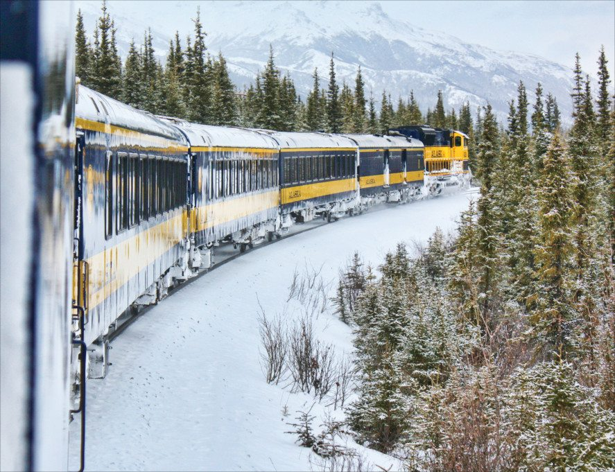
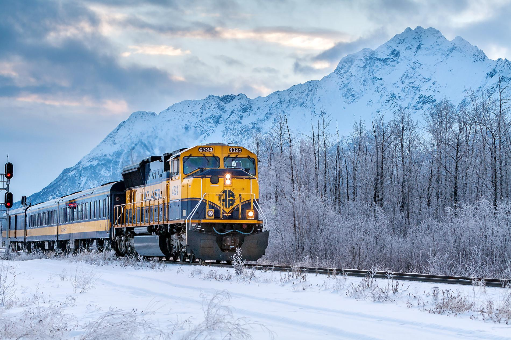

The Alaska Railroad offers a train service to Alaska’s most popular destinations, such as Denali National Park, Seward, Talkeetna, and Anchorage. The railroad operates two passenger classes, both with full-service dining and bar service; the GoldStar Service class is available on the Coastal Classic and Denali trains, while all trains features the Adventure class.
 